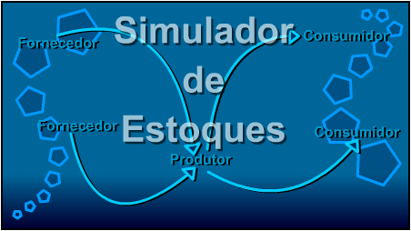

Versão 1.00
Sobre:
Este simulador foi implementado com o intúito de ser apresentado na Terceira
Semana de Sistemas de Informação da UNIFEOB.
A simulação é feita baseando-se em dois produtores, um
consumidor/produtor e dois consumidores.
É possível a configuração de várias opções
do simulador.
O Simulador foi desenvolvido por David Buzatto, adicionando a ele toda a interface
gráfica com o usuário, modelagem do modelo de multithreading,
configurações, desenho dos gráficos e suporte a: impressão,
gravação e recuperação de informações
obtidas.
Orientador: Prof. Fábio G. R. Murback.
Conceito: Fábio G. R. Murback.
Desenvolvimento: David Buzatto, aluno do 2º
Ano de Sistemas de Informação - UNIFEOB.
Para ajuda, utilize o menu abaixo.
| • Reconhecendo a Janela Principal |
| • Reconhecendo a Janela de Informações (Tabela) |
| • Reconhecendo a Janela de Gráficos |
| • Configurando o Simulador |
| • Iniciando uma Simulação |
| • Finalizando uma Simulação |